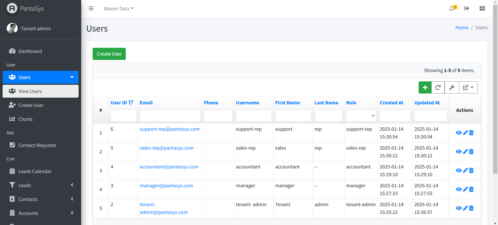
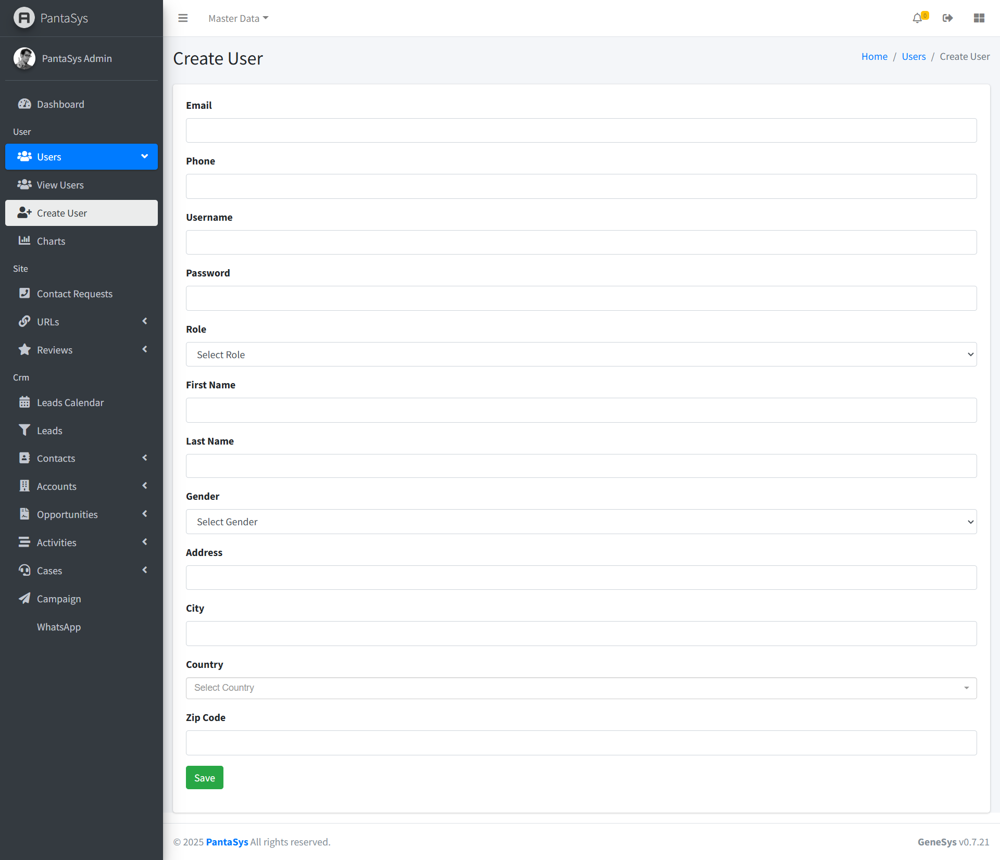
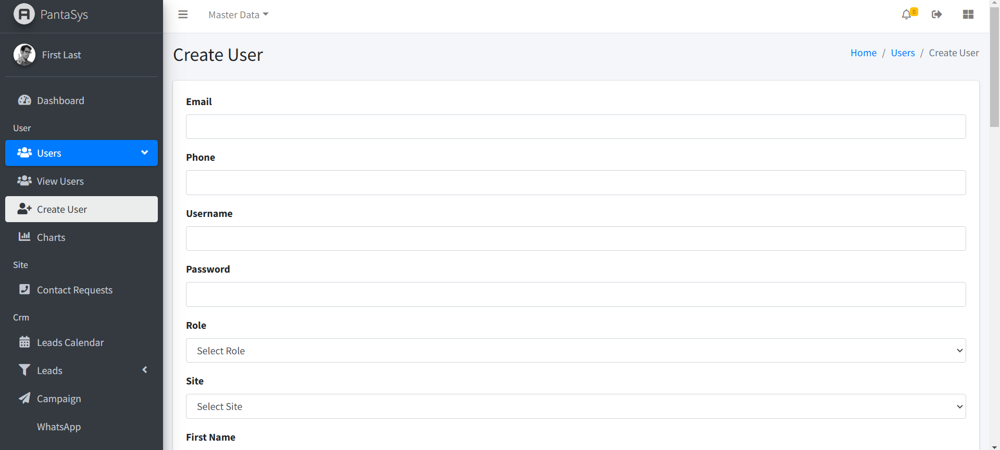
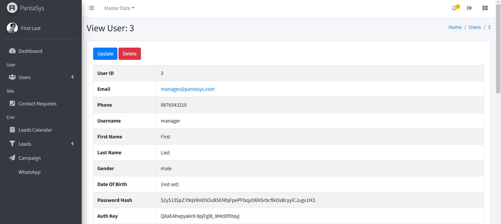
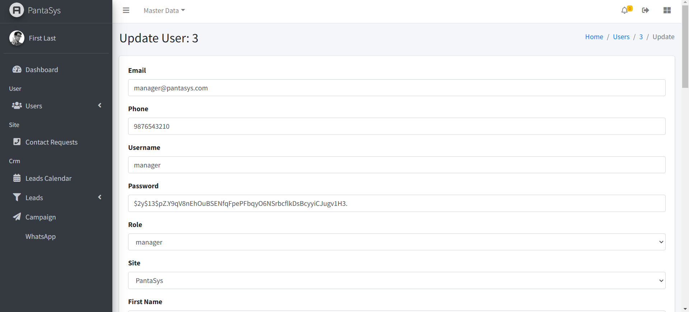

Users
The "Users" module focuses on account management, enabling administrators to control access, assign roles, and maintain user details.
The Users section focuses on user account management. Administrators can:
Create User: Add new users with specific roles.
View Users: Display a list of users in a table format.
Update User: Modify user details and roles.
Delete User: Remove users from the system.
The “Users” module focuses on user account management, empowering administrators to control access, assign roles, and maintain user details. Refer to the Users section for detailed instructions on managing users.
View All Users
{kind=link}
- Actions
This column contains interactive icons for various actions:
View Icon: Opens a detailed view of the user.
Delete Icon: Removes the user from the system.
Update Icon: Opens the user form for editing.
User Fields
{kind=link}
The following fields are available in the Create/Update User form:
Email: - The email address of the user. This field allows users to provide their contact information.
Phone: - The phone number of the user. Useful for direct communication or verification purposes.
Username: - The username selected by the user. This field is used for login and identification.
Password: - The password associated with the user account. Ensures account security.
Role: - The user’s role in the system, Helps assign appropriate permissions and responsibilities.
The options are following: Tenant-Admin, Manager, Accountant, Sales-Rep, Support-Rep, Teacher, Affiliate, User, Guest.
First Name: - The first name of the user. Provides clarity on the user’s identity.
Last Name: - The last name of the user. Completes the user’s full name.
Gender: - The user’s gender, e.g., Male, Female, Other. Used for demographic categorization.
Address: - The user’s address. Used for delivery purposes.
City: - The city part of the address. Specifies the user’s location within a country.
Country: - The country part of the address. Essential for delivery categorization. The options are list of countries.
Zip Code: - The postal code for the address. Ensures accurate delivery.
Save Button: A button to save the user information.Submits the form for processing.
Each field helps in managing and organizing the user’s information effectively.
Managing User
Create a User
{kind=link}
Navigate to the View Users page.
Click the Create User button.
Fill in the required fields and click Save.
View a User

Navigate to the View Users page.
Users are displayed in a table format with all relevant details.
{kind=link}
Update a User

On the View Users page, locate the user you want to modify.
Click the Edit button in the Actions column.
Make the necessary changes and click Save.
{kind=link}
Delete a User
On the View Users page, locate the user you want to delete.
Click the Delete button in the Actions column.
Confirm the deletion to remove the user permanently.
{kind=link}